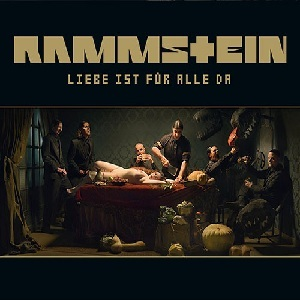

Дискография немецкой индастриал-метал-группы Rammstein состоит из 6 студийных альбомов, 3 концертных альбомов и 4 видеоальбома. Rammstein также выпустили 25 синглов, на 24 из которых были сняты видеоклипы.
На этой странице вы можете прочитать информацию о студийных альбомах коллектива.
Herzeleid
Название
: HerzeleidДата выпуска
: 29 сентября 1995 годаЗапись
: Polar Studios, Стокгольм, Швеция, 1995Жанры
: Neue Deutsche Härte индастриал-металДлительность
: 49:22Продюсер
: Якоб Хелльнер, Carl-Michael HerlöffsonСтрана
: ГерманияЯзык песен
: НемецкийHerzeleid (с нем. — «Сердечная боль») — дебютный альбом немецкой метал-группы Rammstein, выпущенный 29 сентября 1995 года. Обложка альбома изображает участников группы на фоне огромного цветка по пояс без одежды. Это заставило критиков обвинять группу в попытке показать себя как «господствующую расу». Позже была выпущена новая обложка альбома. Песни «Heirate Mich» и «Rammstein» звучат в фильме Дэвида Линча «Шоссе в никуда».
Sehnsucht
Название
: SehnsuchtДата выпуска
: 25 августа 1997 годаЗапись
: Temple Studios, Мальта, 1997Жанры
: Neue Deutsche Härte индастриал-металДлительность
: 51:58Продюсер
: Якоб Хеллнер и RammsteinСтрана
: ГерманияЯзык песен
: НемецкийSehnsucht (нем. «Тоска») — второй альбом группы Rammstein. Выпущен в 1997 году. Почти сразу после выхода стал платиновым. Альбом отличала особая динамика и жёсткий, слегка рваный гитарный рифф. Выпускался ограниченный тираж альбома в диджипаке. Также выпускался Limited tour Box Edition, включавший футболку и постер.
Mutter
Название
: MutterДата выпуска
: 2 апреля 2001 годаЗапись
: Studio Miraval, Франция, 2000Жанры
: Neue Deutsche Härte индастриал-металДлительность
: 45:05Продюсер
: Якоб Хеллнер и RammsteinСтрана
: ГерманияЯзык песен
: НемецкийMutter (с нем. — «Мать») — третий студийный альбом группы Rammstein, вышел 2 апреля 2001 года Альбом записывался в Германии, Франции, Швеции и Америке. Журнал Metal Hammer включил Mutter в 200 лучших рок-альбомов всех времён (в стиле индастриал-метал, 4-е место). В интервью Noizr Zine шведский продюсер и музыкант Петер Тэгтгрен посоветовал Mutter в качестве ориентира всем начинающим метал-продюсерам: «Он очень хорош, потому что в нём много различных элементов — в нём есть оркестровые партии, тяжёлые гитары, хорошее звучание барабанов — он может быть хорошим ориентиром».
Reise, Reise

Название
: Reise, ReiseДата выпуска
: 27 сентября 2004 годаЗапись
: 2003—2004 El Cortijo Studio (Малага, Испания), Studio 301 (Стокгольм, Швеция)Жанры
: Neue Deutsche Härte индастриал-метал, альтернативный металДлительность
: 47:52Продюсер
: Якоб Хеллнер и RammsteinСтрана
: ГерманияЯзык песен
: Немецкий, английскийReise, Reise (начальные слова сигнала к подъёму на немецком флоте, букв. рус. Поднимайтесь, поднимайтесь! — нижненемецкий язык, ср. англ. to rise; другой возможный перевод — рус. Путешествуй, путешествуй!) — четвёртый студийный альбом немецкой индастриал-метал-группы Rammstein, выпущенный 27 сентября 2004 года на лейбле Universal. Он был записан в 2003—2004 годах в различных звукозаписывающих студиях в Италии, Франции и Швеции при участии продюсера Якоба Хелльнера. Благоприятное разрешение кризиса, наступившего в Rammstein во время записи предыдущего альбома, Mutter, повлияло на атмосферу записи Reise, Reise, сделав её менее напряженной. Записав в непринуждённой обстановке 17 песен, Rammstein отобрали для альбома только 11, остальные 6 вошли в следующий альбом, Rosenrot.
Rosenrot

Название
: RosenrotДата выпуска
: 28 октября 2005 годаЗапись
: Teldex Studio, Берлин, Германия, 2005, El Cortijo Studio, Малага, Испания, 2003—2004Жанры
: Neue Deutsche Härte индастриал-метал, альтернативный металДлительность
: 48:20Продюсер
: Якоб Хеллнер и RammsteinСтрана
: ГерманияЯзык песен
: Немецкий, английский, испанскийRosenrot содержит шесть песен, не вошедших в альбом Reise, Reise, одну песню, написанную для альбома Mutter, и четыре новых композиции. Изначально диск должен был называться Reise, Reise Volume Two, но 18 августа 2005 года был анонсирован под названием Rosenrot. Название в буквальном переводе означает «Розочка», но подразумевается персонаж сказки братьев Гримм «Беляночка и Розочка» (нем. Schneeweißchen und Rosenrot).
Liebe ist für alle da
Название
: Liebe ist für alle daДата выпуска
: 16, 20 октября 2009 годаЗапись
: Sonoma Mountain Recording Estate, Сан-Рафел, Калифорния, 2008—2009Жанры
: Neue Deutsche Härte индастриал-метал, альтернативный металДлительность
: 46:07Продюсер
: Якоб Хеллнер и RammsteinСтрана
: ГерманияЯзык песен
: Немецкий, английский, французскийLiebe ist für alle da (в переводе с нем. — «Любовь для всех») — шестой студийный альбом немецкой метал-группы Rammstein, выпущенный 16 октября 2009 года. Концертный тур в поддержку альбома начался 8 ноября 2009 года. В Германии запретили продажу альбома Rammstein Liebe ist für alle da, и музыканты подали в суд на правительство страны.
Rammstein

Название
: RammsteinДата выпуска
: 17 мая 2019 годаЗапись
: La Fabrique (Сен-Реми-де-Прованс, Франция), Белтелерадиокомпания (Минск, Белоруссия), 2018Жанры
: Neue Deutsche Härte, индастриал-метал, альтернативный метал, электро-индастриалДлительность
: 46:20Продюсер
: Ольсен Инвольтини и RammsteinСтрана
: ГерманияЯзык песен
: Немецкий, латинский, английский, французский, итальянский, русскийБезымянный седьмой студийный альбом немецкой NDH-группы Rammstein, также называемый как Rammstein, одноимённо названию группы, был выпущен 17 мая 2019 года. Официально альбом был анонсирован 28 марта 2019 года, одновременно с выпуском сингла «Deutschland». Концертный тур в поддержу альбома начался 27 мая 2019 года.